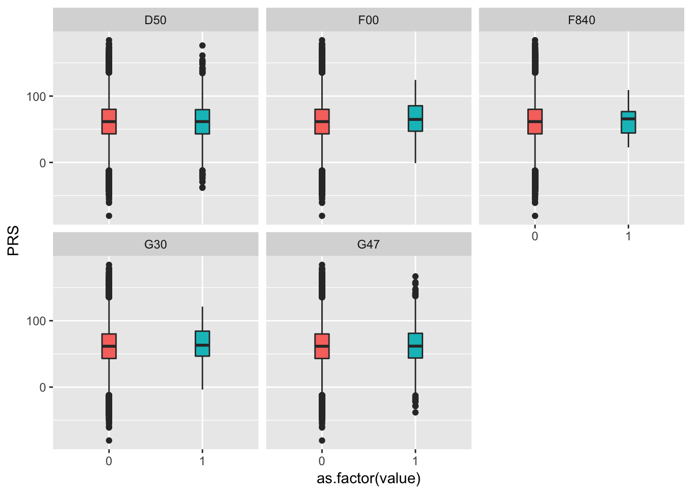
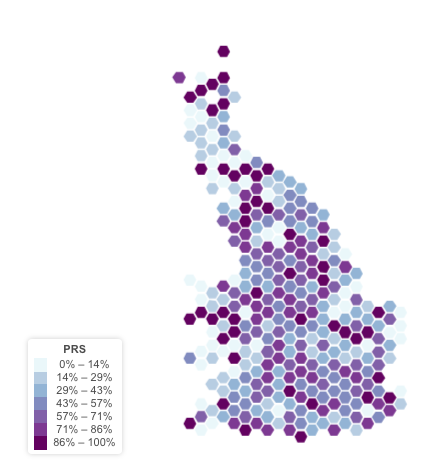

Computin polygenic risk scores to predict vitamin-D concentration in another dataset
Yan Holtz, Zhihong Zhu, Julanne Frater, Perry Bartlett, Jian Yang, John McGrath
This document describes how to compute Polygenic Risk Score (PRS) of the UKB sample. It also describes this PRS, and notably observe its geographical distribution.
Data
The idea is to use the effect of each SNP on the Vitamin-D as provided by Xia et al.. In order to do so we need:
- The GWAS summary statistics of Xia et al.. Available under different format in Delta:
/shares/compbio/Group-Wray/YanHoltz/DATA/GWAS/XiaEtAl_VitaminD
- The genotypes of UKB participants: in delta
/afm01/Q0286/UKBiobank/v2EURu_HM3
library(tidyverse)Compute PRS
PRS are computed using the --score option of plink version 1.9. This work is made twice: first without any correction in the model, second correcting with PCs.
# Good folder on delta
cd /shares/compbio/Group-Wray/YanHoltz/VITAMIND_XIA_ET_AL/7_PRS
# Need upper case for Xia et al sumstat, and keep only 3 columns: SNP id, allele, beta.
more /shares/compbio/Group-Wray/YanHoltz/DATA/GWAS/XiaEtAl_VitaminD/GWAS_vitaminD_XiaEtAL.linear | awk '{ print $2,toupper($4),$7 }' | sed '1d' > tmp
# prepare command
tmp_command="~/bin/plink --bfile /gpfs/gpfs01/polaris/Q0286/UKBiobank/v2EURu_HM3/ukbEURu_imp_chr{TASK_ID}_v2_HM3_QC --score tmp --out output_PRS{TASK_ID}"
# Send command in qsub
qsubshcom "$tmp_command" 1 30G PRS_plink 10:00:00 "-array=1-22"
# Now I've got one PRS per chromosome.
# To have my final PRS, I have to multiply these PRS by the number of SNP per chromosome and sum them.
# Compute the number of SNP per chromosome:
for i in /gpfs/gpfs01/polaris/Q0286/UKBiobank/v2EURu_HM3/ukbEURu_imp_chr*_v2_HM3_QC*bim; do mylen=$(wc -l $i) ; mychr=$(echo $i | sed 's/.*chr//' | sed 's/_.*//') ; echo $mychr $mylen ; done > nbr_snp_per_chromosome
# In R I prepare my final file
R
size <- read.table("nbr_snp_per_chromosome", sep=" ")
final <- 0
for(i in seq(1,22)){
print(i)
chr <- 1
data <- read.table(paste("output_PRS", chr, ".profile", sep=""), header=T)
data$SCORE <- data$SCORE * size[ which(size$V1 == chr) , 2]
final <- final + data$SCORE
}
output=data.frame(ID=data$FID, PRS=final)
write.table(output, file="VitaminD_PRS.txt", row.names=FALSE, quote=FALSE)- Add GPS Coordinate
I add the GPS coordinate of people and a few other information about them.
On Inode, I read the phenotype file and export the GPS positions:
# good repertory
ssh uqyholtz@inode.qbi.uq.edu.au
cd /ibscratch/wrayvisscher/Yan_Holtz/0_DATA
# Get the good column + repeat the ID + change header to respect plink format
zcat /references/UKBiobank/pheno/download/9280_12505_UKBiobank.tab.gz | awk '{print $1, $8, $144, $145, $146, $147, $148, $149}' > GPS_location.txt
gzip GPS_location.txt
# Transfer on Delta
cd ~/Desktop
scp uqyholtz@inode.qbi.uq.edu.au:/ibscratch/wrayvisscher/Yan_Holtz/0_DATA/GPS_location.txt.gz .
scp GPS_location.txt.gz y.holtz@delta.imb.uq.edu.au:/shares/compbio/Group-Wray/YanHoltz/DATA/PHENOTYPE/UKBMerge both information
cd /shares/compbio/Group-Wray/YanHoltz/VITAMIND_XIA_ET_AL/7_PRS
R
library(dplyr)
PRS <- read.table("VitaminD_PRS.txt", header=T)
GPS <- read.table("/shares/compbio/Group-Wray/YanHoltz/DATA/PHENOTYPE/UKB/GPS_location.txt.gz", header=T)
# GPS location are distributed in 3 columns. In have to summarize this info in 1 column only.
GPS$latitude <- GPS$f.129.0.0
GPS$latitude[is.na(GPS$latitude)] <- GPS$f.129.1.0[is.na(GPS$latitude)]
GPS$latitude[is.na(GPS$latitude)] <- GPS$f.129.2.0[is.na(GPS$latitude)]
GPS$longitude <- GPS$f.130.0.0
GPS$longitude[is.na(GPS$longitude)] <- GPS$f.130.1.0[is.na(GPS$longitude)]
GPS$longitude[is.na(GPS$longitude)] <- GPS$f.130.2.0[is.na(GPS$longitude)]
GPS <- GPS %>% dplyr::select(f.eid, f.31.0.0, latitude, longitude)
# Merge
data <- merge(PRS, GPS, by.x="ID", by.y="f.eid", all.x=T) %>% na.omit() %>% dplyr::select(longitude, latitude, PRS, ID, f.31.0.0)
write.table(data, file="VitaminD_PRS_with_GPS.txt", row.names=FALSE, quote=FALSE)
gzip VitaminD_PRS_with_GPS.txt
# Locally
cd /Users/y.holtz/Dropbox/QBI/4_UK_BIOBANK_GWAS_PROJECT/VitaminD-GWAS/0_DATA
scp y.holtz@delta.imb.uq.edu.au:/shares/compbio/Group-Wray/YanHoltz/VITAMIND_XIA_ET_AL/7_PRS/VitaminD_PRS_with_GPS.txt.gz .Description of PRS
Distribution of the PRS:
# Load the file
data <- read.table("0_DATA/VitaminD_PRS_with_GPS.txt.gz", header=T)
# Distribution?
data %>%
mutate(sex = recode( f.31.0.0, `1`="female", `0`="male") ) %>%
ggplot(aes(x=PRS, fill=sex)) +
geom_histogram( bins=100) +
facet_wrap( ~sex, ncol=1 )Relationship between PRS and diseases
I build a file with the ICD10 code obsered in UKB people. It uses the field main ICD10 (field 41202-0.0 to 41202-0.379) and secondary ICD10 (field 41204-0.0 to 41204-0.434).
# Work done in October 2017 on Inode
# Make script extract.sh:
zcat /references/UKBiobank/pheno/download/9280_12505_UKBiobank.tab.gz | cut -f1,8,9,22-24,144-146,147-149,4069-4071,4081,4082,4066-4068,3438,3439-3441,5899-5901,5902-5943,6181,6185-6564,6593-7027,7058-7062,26-28,29-31,4075-4077,4081,5896-5898,6008-6010,6179,6180,262-264,361-363,6593-7027 > /ibscratch/wrayvisscher/Yan_Holtz/3_UKB_COMO/DATA/UKB_phenos.txt
# Send with Qsub
qsub -b y -cwd -e tmp -o tmp "/ibscratch/wrayvisscher/Yan_Holtz/3_UKB_COMO/SCRIPTS/extract.sh"
# Zip the result
gzip /ibscratch/wrayvisscher/Yan_Holtz/3_UKB_COMO/DATA/UKB_phenos.txt
# Transfer it locally
cd /Users/y.holtz/Desktop
scp uqyholtz@inode.qbi.uq.edu.au:/ibscratch/wrayvisscher/Yan_Holtz/3_UKB_COMO/DATA/UKB_phenos.txt.gz .
# Transfert on Delta
scp UKB_phenos.txt.gz y.holtz@delta.imb.uq.edu.au:/shares/compbio/Group-Wray/YanHoltz/DATA/PHENOTYPE/UKBIn this file, I can easily spot people who developped a disease using the ICD10 code of this disease. For example, let’s get the ids of people who developped Myeloid, ICD10 code C92*. Only 570 people are concerned..
cd /shares/compbio/Group-Wray/YanHoltz/VITAMIND_XIA_ET_AL/7_PRS/LINK_DISEASE
printf "F00\nG30\nG47\nD50\nF840" > tocheck
for i in $(cat tocheck) ; do
echo $i ;
zcat /shares/compbio/Group-Wray/YanHoltz/DATA/PHENOTYPE/UKB/UKB_phenos.txt.gz | grep $i | cut -f1 > list_$i
doneAnd a list of all ids in the UKB:
zcat /shares/compbio/Group-Wray/YanHoltz/DATA/PHENOTYPE/UKB/UKB_phenos.txt.gz | cut -f1 > list_allMake a summary file:
# Read all ids
data <- read.table("list_all", header=TRUE)
# loop
for( i in c("F00", "G30", "G47", "D50", "F840" ) ){
print(i)
tmp <- read.table(paste("list_",i,sep=""), header=FALSE)
data$new <- ifelse(data$f.eid %in% tmp$V1, 1, 0)
colnames(data)[ which(colnames(data)=="new")] = i
}Merge this info with the PRS data
PRS <- read.table("/shares/compbio/Group-Wray/YanHoltz/VITAMIND_XIA_ET_AL/7_PRS/PRS_general/VitaminD_PRS_with_GPS.txt.gz", header=TRUE)
data <- merge(PRS, data, by.x="ID", by.y="f.eid", all.x=TRUE)
# Save file
write.table(data, file="PRS_with_diseases.txt", quote=FALSE, row.names=FALSE)
# zip it
gzip PRS_with_diseases.txtSend this file locally
# Transfer it locally
cd /Users/y.holtz/Dropbox/QBI/4_UK_BIOBANK_GWAS_PROJECT/VitaminD-GWAS/0_DATA
scp y.holtz@delta.imb.uq.edu.au:/shares/compbio/Group-Wray/YanHoltz/VITAMIND_XIA_ET_AL/7_PRS/LINK_DISEASE/PRS_with_diseases.txt.gz .Visualize that:
data <- read.table("0_DATA/PRS_with_diseases.txt.gz", header=T)
data %>%
dplyr::select(PRS, F00:F840) %>%
gather(disease, value, -1) %>%
ggplot( aes(x=as.factor(value), y=PRS, fill=as.factor(value))) +
geom_boxplot() +
theme(legend.position="none") +
facet_wrap(~as.factor(disease))
Representation using decile: I count the number of people with a disease in each decile of Vitamin-D PRS. Looks like it work for F00 = Dementia in Alzheimer’s disease. But it is in the wrong side? If I have more vitamin D (decile is high), then I have more people witht this disease? This is very weird..
data %>%
mutate(decile = ntile(PRS, 10)) %>%
dplyr::select(decile, F00:F840) %>%
gather(disease, value, -1) %>%
group_by(decile, disease) %>%
summarize(nb=sum(value)) %>%
ggplot( aes(x=decile, y=nb)) +
geom_bar(stat="identity", width=0.4, fill="skyblue", alpha=0.9) +
scale_x_continuous(breaks=seq(1,10)) +
xlab("VitaminD PRS decile") +
ylab("Number of people with Myeloid") +
facet_wrap(~disease, scale="free_y")Relationship between PRS and PCs
First of all I need to get the coordinate of each UKB participants on its 10 first PCs. I’m gonna get the PCs in Angli file:
cd /shares/compbio/Group-Wray/YanHoltz/VITAMIND_XIA_ET_AL/7_PRS/LINK_PC
cp /gpfs/gpfs01/polaris/Q0286/uqaxue/phen/covar_sex_age_10PCs.txt .Then I merge my PRS with this PC information
PRS <- read.table("/shares/compbio/Group-Wray/YanHoltz/VITAMIND_XIA_ET_AL/7_PRS/PRS_general/VitaminD_PRS_with_GPS.txt.gz", header=TRUE)
PC <- read.table("covar_sex_age_10PCs.txt", header=T)
# Merge
data <- merge(PRS, PC, by.x="ID", by.y="FID", all.x=TRUE)
# Save file
write.table(data, file="PRS_with_PC.txt", quote=FALSE, row.names=FALSE)
# zip it
gzip PRS_with_PC.txtSend this file locally
# Transfer it locally
cd /Users/y.holtz/Dropbox/QBI/4_UK_BIOBANK_GWAS_PROJECT/VitaminD-GWAS/0_DATA
scp y.holtz@delta.imb.uq.edu.au:/shares/compbio/Group-Wray/YanHoltz/VITAMIND_XIA_ET_AL/7_PRS/LINK_PC/PRS_with_PC.txt.gz .Check the relationship
data <- read.table("0_DATA/PRS_with_PC.txt.gz", header=TRUE)
data %>% head(1000) %>%
dplyr::select(PRS, PC1:PC10) %>%
gather(PC, value, -1) %>%
ggplot( aes(x=PRS, y=value)) +
stat_density_2d(aes(fill = ..density..), geom = "raster", contour = FALSE) +
scale_fill_distiller(palette= "Spectral", direction=1) +
scale_x_continuous(expand = c(0, 0)) +
scale_y_continuous(expand = c(0, 0)) +
theme(
legend.position='none'
) +
facet_wrap( ~PC) +
ggtitle("Correlation between VitaminD PRS and the 10 first PCs") +
theme_classic()
Check through a Scatterplot
data %>%
dplyr::select(PRS, PC1:PC10) %>%
gather(PC, value, -1) %>%
ggplot( aes(x=PRS, y=value)) +
geom_point(size=0.1, alpha=0.1) +
theme(
legend.position='none'
) +
facet_wrap( ~PC) +
ggtitle("Correlation between VitaminD PRS and the 10 first PCs") Clearly something happening on PCs 1, 2 3, 4, 6
Geographical Distribution of PRS
I used the UKB geo application to represent the geographical distribution of the PRS. I used the place of birth has a proxy of the position of each UKB study participant.
There is no organization of the PRS per region.

Geographical distribution of the GC gene
First I need to get the allele of the genome wide significant SNPs for all the UK Biobank participants. I’ve got 6 SNPs to recover as described by Xia et al.
cd /shares/compbio/Group-Wray/YanHoltz/VITAMIND_XIA_ET_AL/7_PRS/PRS_GCgene
tmp_command="plink --bfile /gpfs/gpfs01/polaris/Q0286/UKBiobank/v2EURu_HM3/ukbEURu_imp_chr4_v2_HM3_QC --snp rs3755967 --recode --out allele_at_GC" ; qsubshcom "$tmp_command" 1 10G recover_allele 10:00:00 ""
tmp_command="plink --bfile /gpfs/gpfs01/polaris/Q0286/UKBiobank/v2EURu_HM3/ukbEURu_imp_chr11_v2_HM3_QC --snp rs12785878 --recode --out allele_at_DHCR7" ; qsubshcom "$tmp_command" 1 10G recover_allele 10:00:00 ""
# Other SNP are not in HAPMAP3
tmp_command="plink --bfile /gpfs/gpfs01/polaris/Q0286/UKBiobank/v2EURu_impQC/ukbEURu_imp_chr11_v2_imp_QC --snp rs10741657 --recode --out allele_at_CYP2R1" ; qsubshcom "$tmp_command" 1 10G recover_allele 10:00:00 ""
tmp_command="plink --bfile /gpfs/gpfs01/polaris/Q0286/UKBiobank/v2EURu_impQC/ukbEURu_imp_chr20_v2_imp_QC --snp rs17216707 --recode --out allele_at_CYP24A1" ; qsubshcom "$tmp_command" 1 10G recover_allele 10:00:00 ""
tmp_command="plink --bfile /gpfs/gpfs01/polaris/Q0286/UKBiobank/v2EURu_impQC/ukbEURu_imp_chr12_v2_imp_QC --snp rs10745742 --recode --out allele_at_AMDHD1" ; qsubshcom "$tmp_command" 1 10G recover_allele 10:00:00 ""
tmp_command="plink --bfile /gpfs/gpfs01/polaris/Q0286/UKBiobank/v2EURu_impQC/ukbEURu_imp_chr14_v2_imp_QCC --snp rs8018720 --recode --out allele_at_SEC23A" ; qsubshcom "$tmp_command" 1 10G recover_allele 10:00:00 ""Then I need to merge this file with the localization of people.
R
library(dplyr)
PRS <- read.table("allele_at_GC.ped", header=F)
GPS <- read.table("/shares/compbio/Group-Wray/YanHoltz/DATA/PHENOTYPE/UKB/GPS_location.txt.gz", header=T)
# GPS location are distributed in 3 columns. In have to summarize this info in 1 column only.
GPS$latitude <- GPS$f.129.0.0
GPS$latitude[is.na(GPS$latitude)] <- GPS$f.129.1.0[is.na(GPS$latitude)]
GPS$latitude[is.na(GPS$latitude)] <- GPS$f.129.2.0[is.na(GPS$latitude)]
GPS$longitude <- GPS$f.130.0.0
GPS$longitude[is.na(GPS$longitude)] <- GPS$f.130.1.0[is.na(GPS$longitude)]
GPS$longitude[is.na(GPS$longitude)] <- GPS$f.130.2.0[is.na(GPS$longitude)]
GPS <- GPS %>% dplyr::select(f.eid, f.31.0.0, latitude, longitude)
# Merge & clean
data <- merge(PRS, GPS, by.x="V1", by.y="f.eid", all.x=T) %>%
na.omit() %>%
mutate(GC_gene=as.factor(paste(V7,V8,sep=""))) %>%
filter(GC_gene!="00") %>%
droplevels() %>%
mutate(GC=as.numeric(GC_gene)) %>%
dplyr::select(latitude, longitude, GC)
# Save and zip
write.table(data, file="VitaminD_PRS_geneGC.txt", row.names=FALSE, quote=FALSE)
gzip VitaminD_PRS_geneGC.txt
# Locally
cd /Users/y.holtz/Dropbox/QBI/4_UK_BIOBANK_GWAS_PROJECT/VitaminD-GWAS/0_DATA
scp y.holtz@delta.imb.uq.edu.au:/shares/compbio/Group-Wray/YanHoltz/VITAMIND_XIA_ET_AL/7_PRS/PRS_GCgene/VitaminD_PRS_geneGC.txt.gz .
A work by Yan Holtz
Yan.holtz.data@gmail.com